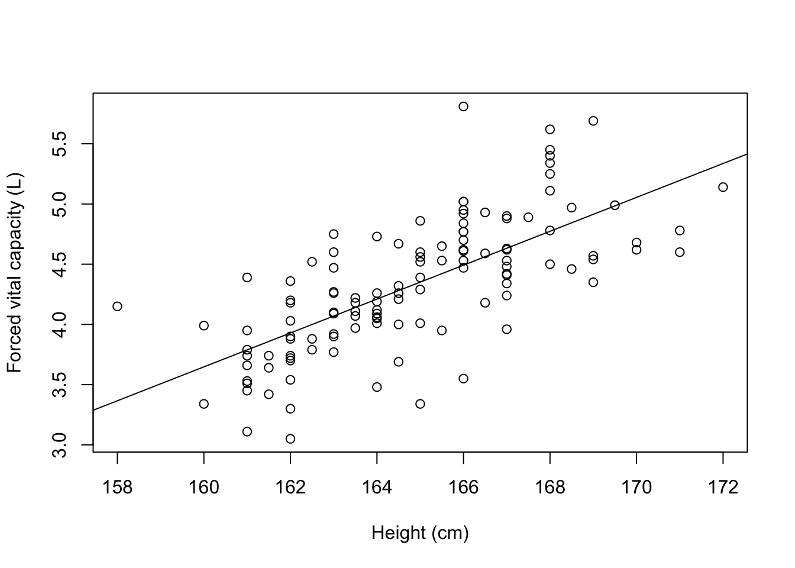
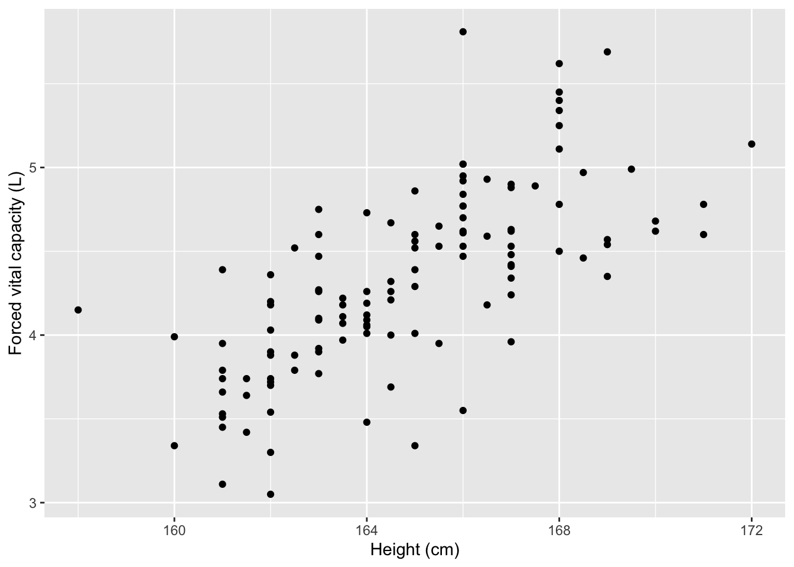
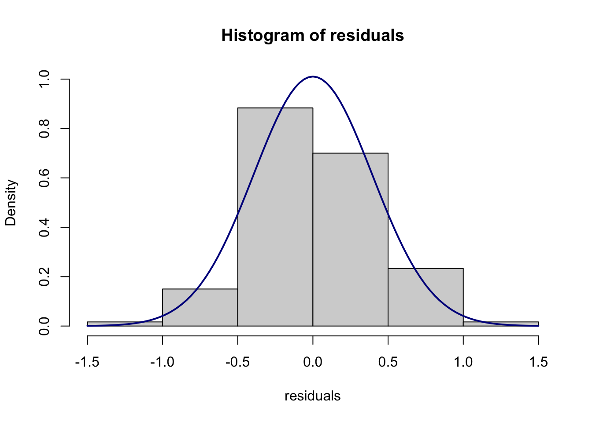
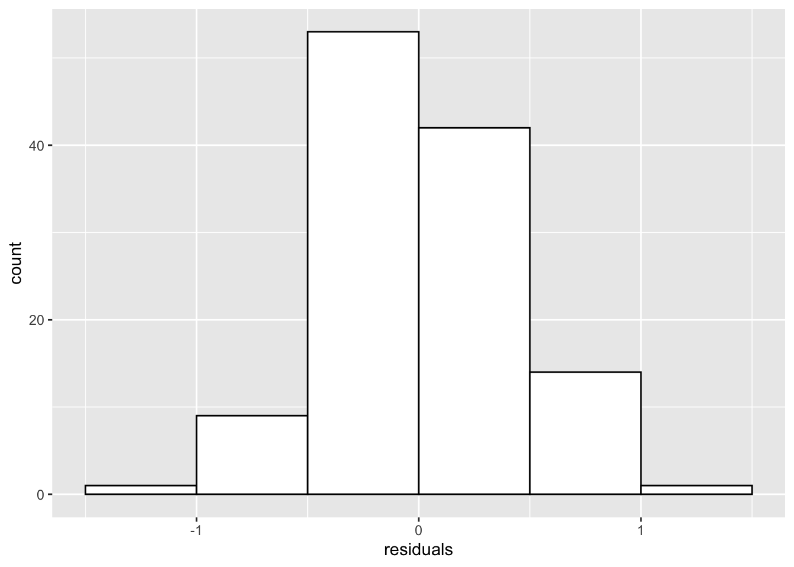

Chapter 8 Correlation and simple linear regression
We will demonstrate using Stata for correlation and simple linear regression using the dataset Example_8.1.dta.
library(ggplot2) # Optional, for nicer looking scatterplots
library(haven) # For importing data
lung <- read_dta("/Users/td/Documents/GithubRepos/phcm9795/data/examples/Example_8.1.dta")8.1 Creating a scatter plot
We can use the plot function to create a scatter plot to explore the association between height and FVC, assigning meaningful labels with the xlab and ylab commands:
plot(x=lung$Height, y=lung$FVC, xlab="Height (cm)", ylab="Forced vital capacity (L)")
To add a fitted line, we can use the abline() function which adds a straight line to the plot. The equation of this straight line will be determined from the estimated regression line, which we specify with lm(y ~ x). Putting this all together:
plot(x=lung$Height, y=lung$FVC, xlab="Height (cm)", ylab="Forced vital capacity (L)")
abline(lm(lung$FVC ~ lung$Height))
To create a scatter plot using ggplot2, we define the x and y aesthetics as the Height and FVC. We then specify that we want to plot points, by specifying the point geometry using geom_point. We can add labels in the usual way. Putting it all together:
ggplot(data=lung, aes(x=Height, y=FVC)) +
geom_point() +
labs(x="Height (cm)", y="Forced vital capacity (L)")
We can add an estimated regression line by adding a geom_smooth, specifying that the line should be based on a linear model (lm), and no error shading should be included (se=FALSE):
ggplot(data=lung, aes(x=Height, y=FVC)) +
geom_point() +
geom_smooth(method=lm, se=FALSE) +
labs(x="Height (cm)", y="Forced vital capacity (L)")
#> `geom_smooth()` using formula 'y ~ x'
8.2 Calculating a correlation coefficient
We can use the cor.test function to calculate a Pearson’s correlation coefficient:
cor.test(lung$Height, lung$FVC)
#>
#> Pearson's product-moment correlation
#>
#> data: lung$Height and lung$FVC
#> t = 10.577, df = 118, p-value < 2.2e-16
#> alternative hypothesis: true correlation is not equal to 0
#> 95 percent confidence interval:
#> 0.5924715 0.7794090
#> sample estimates:
#> cor
#> 0.6976288.3 Fitting a simple linear regression model
We can use the lm function to fit a simple linear regression model, specifying the model as y ~ x. Using Example_8.1.dta, we can quantify the relationship between FVC and height.
lm(FVC ~ Height, data=lung)
#>
#> Call:
#> lm(formula = FVC ~ Height, data = lung)
#>
#> Coefficients:
#> (Intercept) Height
#> -18.8735 0.1408The default output from the lm function is rather sparse. We can obtain much more useful information by defining the model as an object, then using the summary() function:
model1 <- lm(FVC ~ Height, data=lung)
summary(model1)
#>
#> Call:
#> lm(formula = FVC ~ Height, data = lung)
#>
#> Residuals:
#> Min 1Q Median 3Q Max
#> -1.01139 -0.23643 -0.02082 0.24918 1.31786
#>
#> Coefficients:
#> Estimate Std. Error t value Pr(>|t|)
#> (Intercept) -18.87347 2.19365 -8.604 3.89e-14 ***
#> Height 0.14076 0.01331 10.577 < 2e-16 ***
#> ---
#> Signif. codes:
#> 0 '***' 0.001 '**' 0.01 '*' 0.05 '.' 0.1 ' ' 1
#>
#> Residual standard error: 0.3965 on 118 degrees of freedom
#> Multiple R-squared: 0.4867, Adjusted R-squared: 0.4823
#> F-statistic: 111.9 on 1 and 118 DF, p-value: < 2.2e-16Finally, we can obtain 95% confidence intervals for the regression coefficients using the confint function:
confint(model1)
#> 2.5 % 97.5 %
#> (Intercept) -23.2174967 -14.5294444
#> Height 0.1144042 0.16710928.4 Plotting residuals from a simple linear regression
We can use the resid function to obtain the residuals from a saved model. These residuals can then be plotted using a histogram in the usual way:
residuals <- resid(model1)
hist(residuals)
A Normal curve can be overlaid if we plot the residuals using a probability scale.
hist(residuals, probability = TRUE, ylim=c(0,1))
curve(dnorm(x, mean=mean(residuals), sd=sd(residuals)),
col="darkblue", lwd=2, add=TRUE)
Alternatively, a ggplot2 approach can be used, after converting the single vector of residuals into a dataframe:
resid <- as.data.frame(residuals)
ggplot(resid, aes(x=residuals)) +
geom_histogram(binwidth = 0.5, boundary=-1.5, colour="black", fill="white")
ggplot(resid, aes(x=residuals)) +
geom_histogram(aes(y = ..density..), binwidth = 0.5, boundary=-1.5, colour="black", fill="white") +
stat_function(fun = dnorm, args = list(mean = mean(resid$residuals), sd = sd(resid$residuals)))